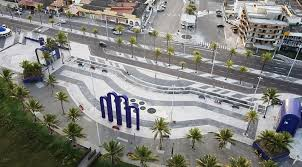

Praia de atalaia

Na orla de Atalaia existem opções de lazer como bares e casas de dança e música,
além de barracas de água de coco e quadras de Basquete
futebol, tênis
e uma pista de skate. Considerada uma das mais bonitas do Brasil
oferece aos cidadãos e turistas o que há de melhor em lazer e entretenimento
Roteiro turistíco em 1 Dia
- Café da manhã em uma das barracas da orla.
- Caminhada até os Arcos da Atalaia para fotos.
- Vista ao Ocenário de Aracaju (Projeto Tamar).
- Almoço com frutos do mar.
- Tarde livre para banho de mar e esportes.
- Fim de tarde com água de coco observando o pôr do sol.